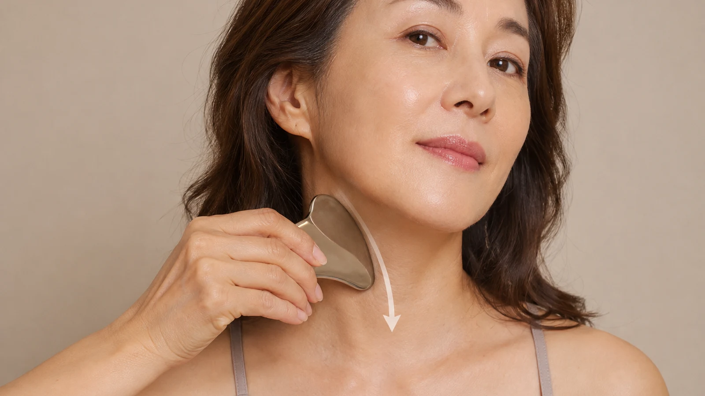

The Bojin Journal · Jaw & Neck
Loose Skin and Lines Along Your Neck?

"Turkey neck" is an unkind name for something nearly every woman meets eventually: fine horizontal lines across the throat, a softness under the chin, skin that sits a little away from the muscle instead of close against it. The mirror presents it as one problem. It is three, stacked on top of each other, and you can do something real about two of them.
The three pulls behind a tired-looking neck
Your neck carries less fat and muscle bulk than almost any other area you care for, so it shows wear early. Three separate forces layer here, and telling them apart is the useful part.
Posture folds the neck forward and creases the skin in the same place for hours a day. Held tension keeps the vertical muscle bands standing out. Pooled fluid settles at the base by evening and blurs the definition. The first pull is structural. The other two respond to a gentle release, and together they carry more of the look than you'd guess.

The posture pull. Hours over a phone or laptop shorten the front of the neck and fold the skin across it in the same position, day after day, year after year. That repetition writes the horizontal lines.
The tension pull. A thin sheet of muscle called the platysma runs down the front of your neck, and it tightens with stress, clenching, even long conversations. When it stays braced, the vertical bands stand out, most visibly when you turn your head.
The fluid pull. By evening, fluid settles at the base of the neck the same way it settles under the eyes overnight, and it adds a heavier, blurred look on top of everything else.
What a gentle release can honestly change
A hands-on habit cannot tighten loose skin, and it cannot undo twenty years of reading in bed. I want that plain before the steps, not buried after them. What it can do is ease the braced platysma and move the settled fluid along, and on an ordinary day those two carry a real share of how heavy the neck looks. Ease them and the area reads calmer and more defined, gently and temporarily, building with consistency.
A 5-minute neck release
Use oil or your regular moisturizer here without fail. Neck skin is thin, and it forgives nothing done dry.

Lift your chin and hold for three breaths
Let the front of the neck lengthen. Feel where it has been sitting folded all day; that awareness guides the rest.
Sweep from jaw to collarbone, one side at a time
Flat fingertips or a stone, slow light passes from under the jaw straight down. Downward only. No circles over the throat, no upward strokes here.
Follow each vertical band
Trace each muscle band from below the ear down its length, light pressure. This tissue answers to patience, not force.
Settle the base
Give the area just above the collarbone several unhurried passes. Everything you moved needs this exit.
Finish with chin level, shoulders down
Notice the difference between how the front of your neck felt in step one and how it feels now. That comparison is your progress marker.
The one habit worth pairing with this
Raise your screen. Bring the phone up instead of your head down. That single change addresses the posture pull at its source, and it is the only item on this page that touches the structural side of the problem. The release handles what the day already left behind; the screen height decides how much gets left behind tomorrow.
Three pulls, one honest split: one belongs to time, two belong to today. Take back the two that are yours, and let the mirror argue with what's left.
Quick answers
Can this get rid of loose skin on my neck?
No. Loose skin is a structural change, and no gentle hands-on habit removes it. Distrust anything that claims otherwise. What this release does reach is the tension and pooled fluid sitting on top of the loose skin, and on an ordinary day those two account for more of the heavy look than most women expect.
Is it safe to work on the front of my neck?
Yes, with light pressure, always sweeping downward toward the collarbone. Never work upward or in circles over the throat. Skip the area if you have a thyroid condition, a recent neck procedure, or anything tender or swollen, and ask a doctor first when in doubt.
Will this help my posture, or just how my neck looks?
It eases the tension that poor posture leaves behind; it does not correct the posture. Raise your screen and phone toward eye level for the cause, use the release for the residue. The pair works; either one alone fights half the problem.
How is this different from the jaw-and-neck reset for a soft jawline?
That routine works higher: the jaw corner and under the chin. This one works the neck itself, the vertical bands and the base above the collarbone. Do them on different days or back to back; they cover different ground and pair well.
See the downward sweep in motion
Direction and pressure matter more on the neck than anywhere else you'll practice. My free 3-minute video shows the exact downward passes, so you can follow along safely the first time.
Watch the free 3-min videoYu-Ting Lan is a Taiwan-based international bojin instructor and the founder of Héhé Studio. She has taught her bojin method to more than a thousand students, from complete beginners to grandmothers, across Taiwan, Hong Kong, and Malaysia.